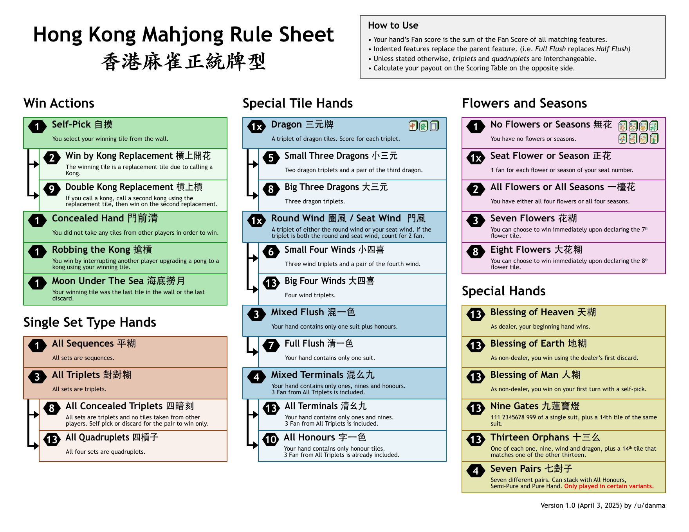
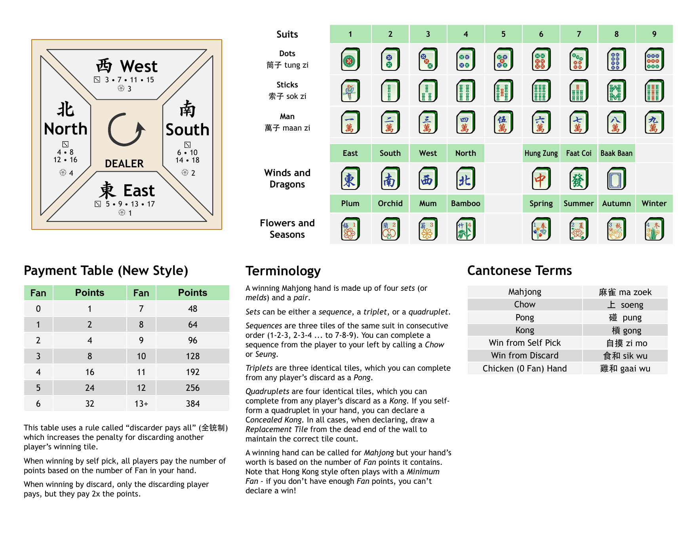

Hong Kong Mahjong scoring
Use this page as a table-side reference. The cheat sheet uses a “discarder pays all” payment method and may not match every Hong Kong Mahjong variation.
1. Confirm a legal win
A standard winning hand contains four sets and a pair. Special hands, such as Thirteen Orphans or Nine Gates, follow their own structures.
2. Count fan
Add the fan for every feature that applies. Indented or upgraded features replace the lower parent feature rather than stacking with it.
3. Convert fan to points
Use the payment table below. The table caps all hands of 13 fan or more at 384 points.
4. Determine who pays
Under this sheet’s system, all three opponents pay for a self-pick. For a discard win, only the discarder pays, at twice the listed point value.
Payment table (new style)
| Fan | Points | Fan | Points |
|---|---|---|---|
| 0 | 1 | 7 | 48 |
| 1 | 2 | 8 | 64 |
| 2 | 4 | 9 | 96 |
| 3 | 8 | 10 | 128 |
| 4 | 16 | 11 | 192 |
| 5 | 24 | 12 | 256 |
| 6 | 32 | 13+ | 384 |
Worked payment examples
Self-pick, 4 fan
Four fan converts to 16 points. Each of the three opponents pays 16, so the winner receives 48 total.
Discard win, 4 fan
Four fan converts to 16 points. The discarder pays double, so the winner receives 32 total.
Scoring cheat sheet
Version 1.0, dated 3 April 2025, credited in the supplied document to /u/danma. These images are reproduced here as a convenient reference.

